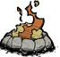
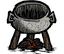
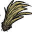

Agora que você possui os matérias e um local para a base, esta na hora de construir-la! Comece criando uma fogueira permanente (), depois construa uma máquina de alquimia () para desbloquear ainda mais receitas. A () é construída através de uma maquina de ciências utilizando a seguinte receita:

Depois, crie pelo menos uma panela () e caso tenha sobrado madeira, crie 1 ou 2 baús() para guardar os seus itens. Então comece a plantar as () cavadas. Vale notar que as plantas de graveto não necessitam de fertilizantes mas as frutas silvestres e gramas sim. Procure fertilizantes( ) que podem ser obtidos ao dar frutas aos homens-porcos(
) que podem ser obtidos ao dar frutas aos homens-porcos( ) ou produzidos naturalmente por beefalos(
) ou produzidos naturalmente por beefalos( ). Caso alguma comida estrague ela se torna () que também pode ser utilizado para fertilizar.
). Caso alguma comida estrague ela se torna () que também pode ser utilizado para fertilizar.